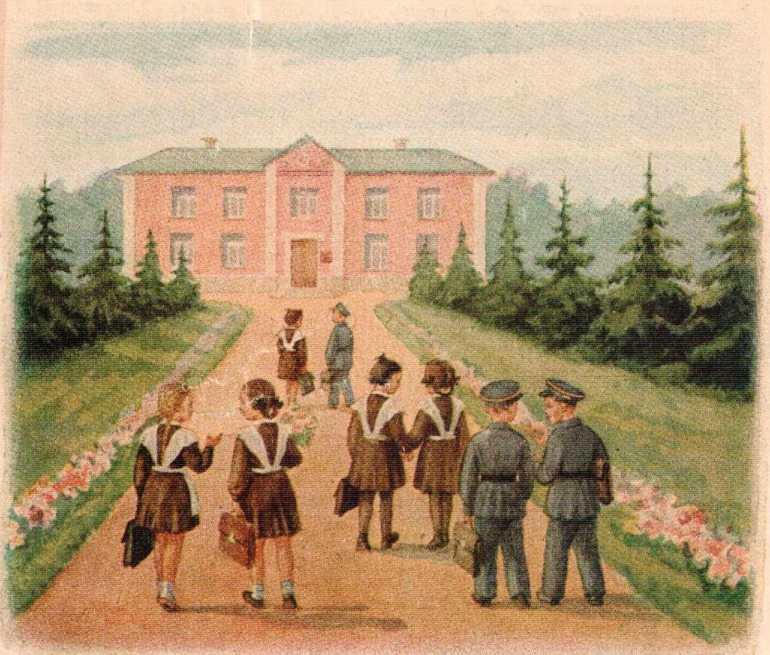
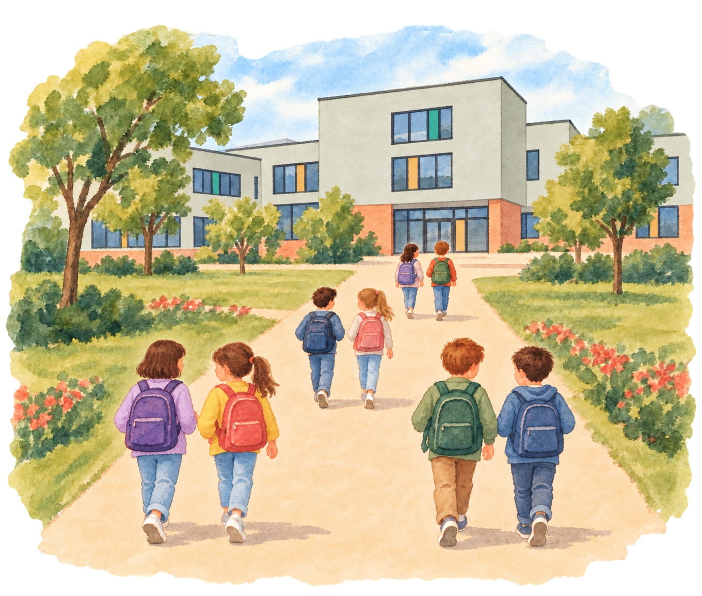
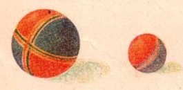
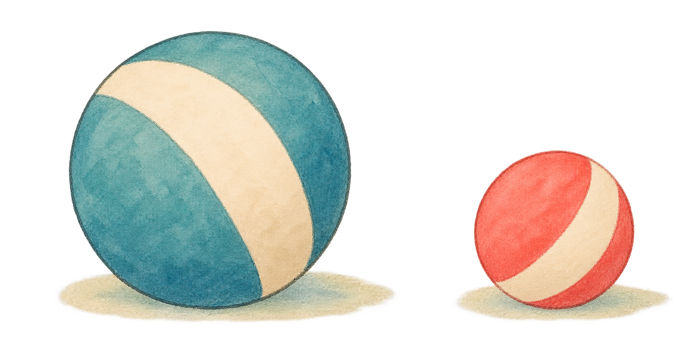
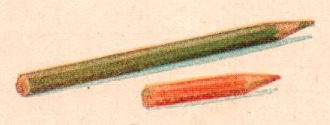
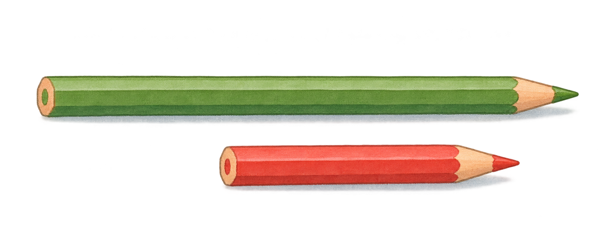
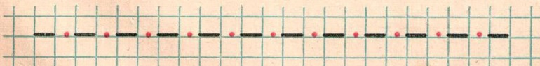
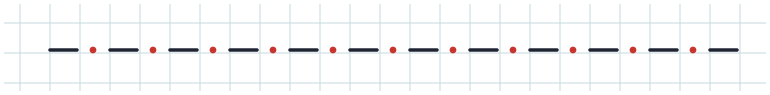

Первый урок · было / стало
Страница 3. Школа, мячи, карандаши и графический образец обновлены; числа и направление заданий сохранены.
1. Дети идут в школу
8 детей · 4 пары · современная школа и одежда


2–3. Большой и маленький мяч
Одна пара рисунков используется для обоих вопросов


4–5. Длинный и короткий карандаш
Одна пара рисунков используется для обоих вопросов


Образец: чёрточки и красные точки
12 штрихов и 11 точек в прежнем порядке.

